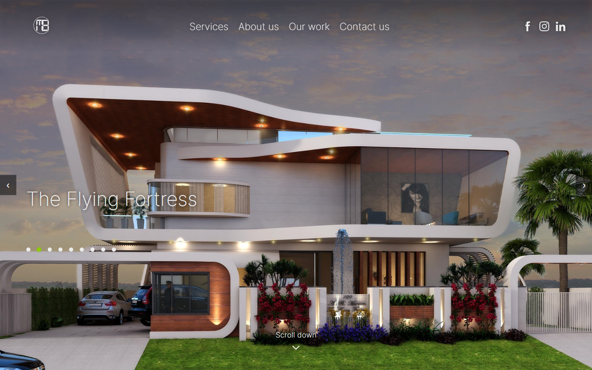
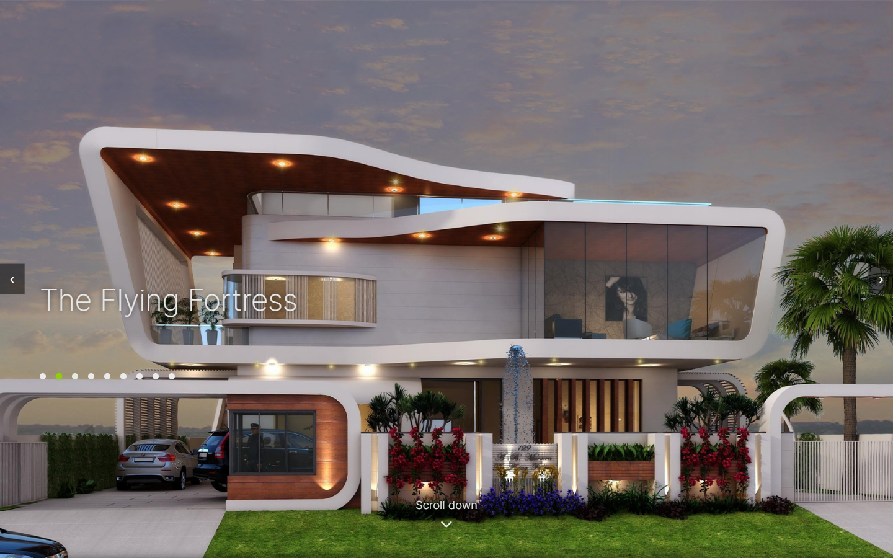
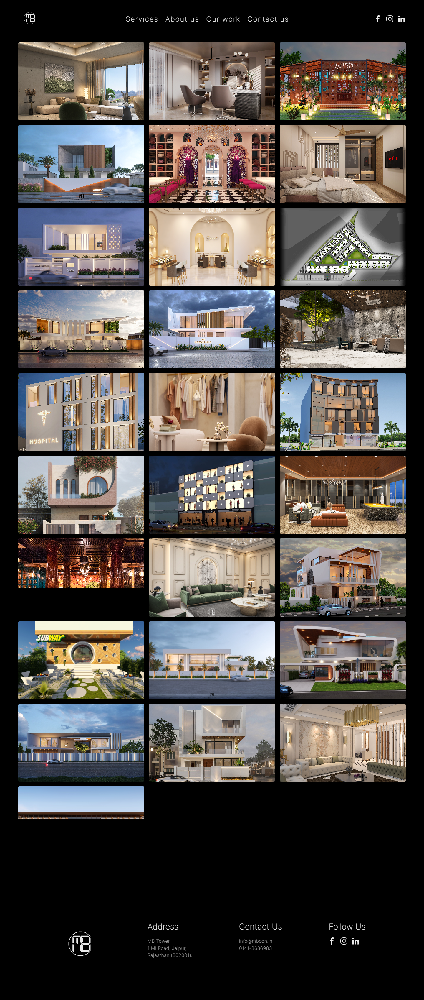
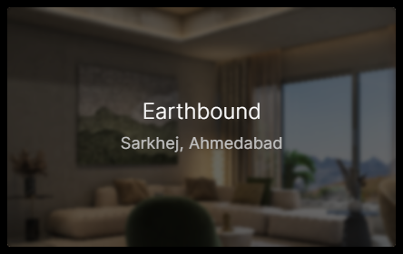
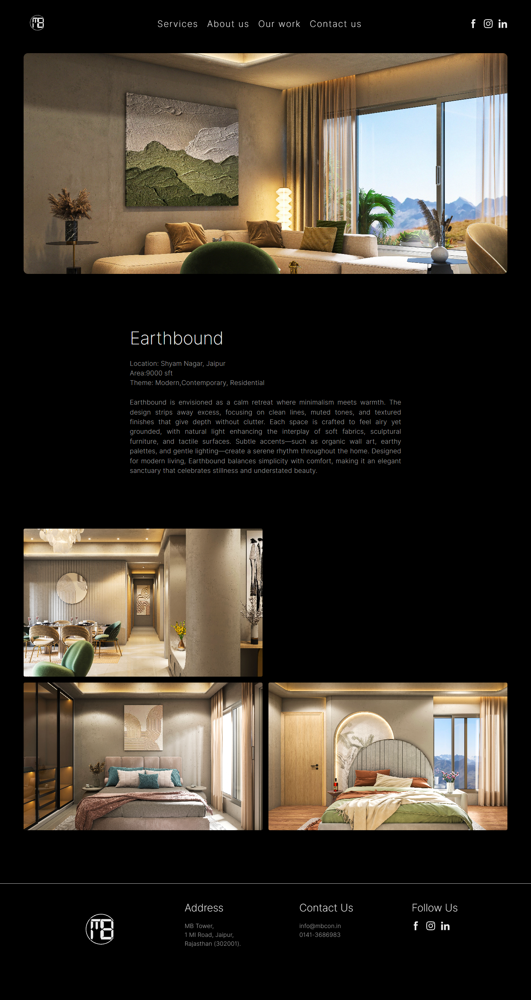

MB Consulting —
Architecture &
Interior Design
Website design and development for an architecture firm in Jaipur. The brief was simple: make the work the hero, keep it fast, keep it clean.

The Brief
MB Consulting had an existing WordPress website. It was slow, the UI was dated, and it showed only a fraction of the firm's actual work — with no consistency between how projects were presented. The firm had grown significantly. The portfolio hadn't.
The brief was direct: build a website that works well, loads fast, and puts the firm's projects front and centre. No heavy animations. No theatrical effects. Just the work, presented with care.

The Firm section and condensed homepage grid — returning visitors go straight to the work.
The Approach
The starting assumption was that the design should get out of the way.
MB Consulting's photography is strong. Their projects — residential, commercial, hospitality, retail — have a visual range that speaks for itself. The website's job was to frame that work, not compete with it. This shaped every decision: the type, the color, the layout, the interaction model.
The less the interface draws attention to itself, the more the architecture can.
Design Decisions
Black canvas
The background is pure black. This wasn't a style choice made in isolation — it came from aligning with MB Consulting's existing brand. The logo and brand system already worked in dark contexts. Extending that to the web created visual continuity, and it has a practical benefit: architectural photography reads significantly better against dark backgrounds than white.
Carousel for flagship projects
The homepage opens with a full-screen, full-height image carousel cycling through nine of the firm's flagship projects. The decision to lead with a carousel rather than a static hero came from a specific constraint: the client had multiple strong projects and no hierarchy between them — no single "lead" project that deserved to dominate. The carousel resolves that without burying any of them.
Navigation is deliberate but unobtrusive — dot indicators and arrow controls. Project locations were removed from the carousel overlay after testing; the project name alone felt cleaner and let the image carry the context.

Our Work — 28 projects, each a full photograph. No text in the resting state.
Grid with hover reveals
The Our Work page shows 28 projects in a consistent grid. Each card is the project photograph — no text in the resting state. On hover, a title and location fade in as an overlay. This keeps the grid visually unified at a glance — a wall of work — while still making individual projects identifiable on interaction.

Hover state: title + location overlay. Clean grid at rest, readable on interaction.
Typography: Inter at weight 200
Inter was chosen for neutrality. The MB Consulting logo has strong geometric personality — any display typeface in the headings would compete with it or clash against it. Inter, at weight 200, stays completely neutral. It reads as structured and considered without asserting its own character.
Weight 200 across all heading levels also creates an airy, editorial quality that suits the photography — light type on dark backgrounds doesn't interrupt the image, it frames it. Inter is also open-source, which solved a practical client constraint without compromising the outcome.

Individual project page — consistent template across all 28 projects.
Individual project pages
Each of the 28 projects has its own page: a full-width hero image followed by project details. The structure is consistent across all projects — same template, same hierarchy. Consistency was a core requirement from the brief; the old site had no coherent structure for how projects were presented.
No framework, modular CSS
The site is pure HTML, CSS, and JavaScript — no build tool, no dependency chain, no framework overhead. CSS is split into purpose-specific files: home.css, header.css, type.css, footer.css, project-file.css. For a five-page website serving mostly image content on potentially slow connections, the absence of framework overhead is a direct performance gain.
The Result
28 projects are now consistently published and accessible. The homepage communicates the firm's scale and range immediately, without the visitor needing to navigate anywhere first. The site loads fast, works on slow connections, and doesn't ask the visitor to do any work to find the work.
The live site is at mbcon.in ↗
The logo and color system belong to MB Consulting — they came into this project as existing constraints. Web design, layout, UX decisions, information architecture, and development are entirely mine.